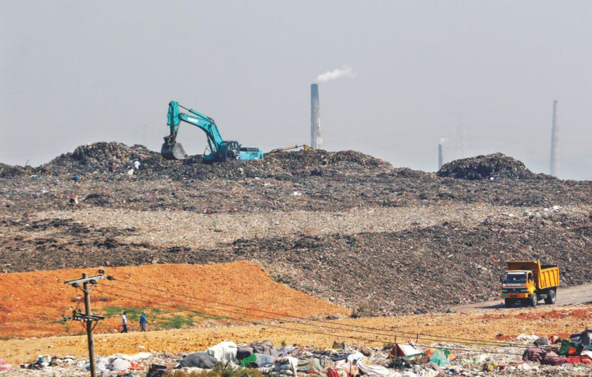
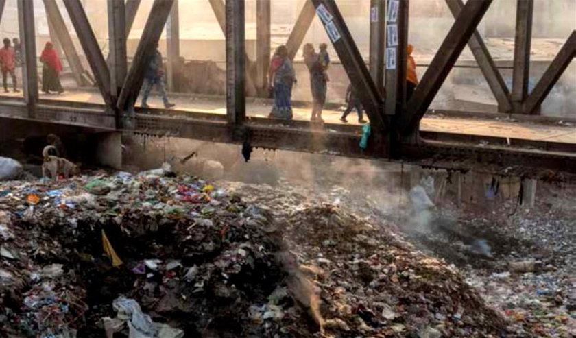
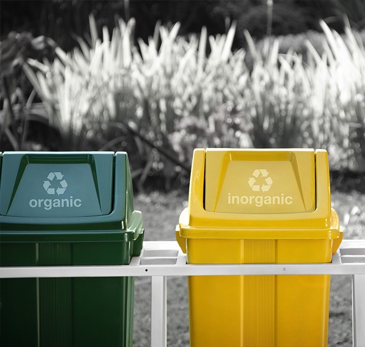
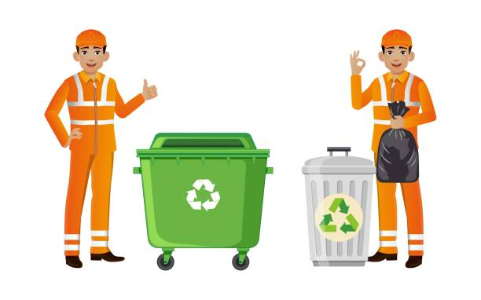
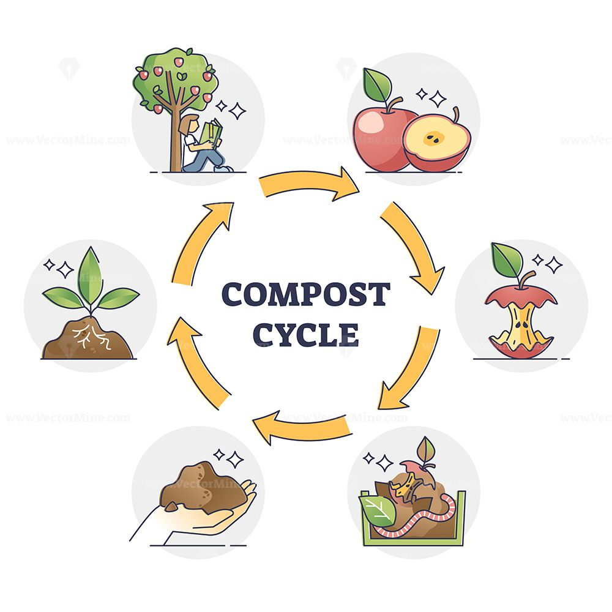

About Us
To accommodate the quantity of garbage generated each day, by 2050, we will need the same amount of landfill area as 95 regular-sized football fields.
This assumption is based on the daily reports of how trash management is being handled. If this continues, air,
soil, and water pollution in nature will dramatically grow. Not only will this negatively impact our everyday lives, but it will also provide a serious
challenge for our future generations to bear these obligations.


However, we should alter it and we can. We now have a big obligation to protect our environment by taking all the required precautions.
We must accept responsibility for addressing the environmental contamination that is escalating daily, both directly and indirectly. Owners toss away their rubbish,
from homes to eateries. We can only appropriately handle the garbage if they do it in the proper location and distribute it to the proper recipients. They will
simply need to sign up for our service, keep organic and inorganic garbage apart, and deliver it when our servicemen knock on their doors. Instead of harming
and contaminating the environment, this garbage will be transported to a location where it will be appropriately handled and additionally, the owners will
receive hefty compensation for the trash they carelessly discard.
Both organic and inorganic waste will be cleverly converted into fertilizer that can be
used in agriculture. In addition to being able to be utilized in gardens, homes, and nurseries, recycled and reused items can also be resold on the market.
The entire system may initially have just a very minor effect from this process. Although this is a very minor step, we think it is the correct move in the
right direction for progress.

You have done Your work. Let us handle it from there. And thanks a lot for giving us the chance to take care of the environment.

The cycle of making fertilizer is so fun !
